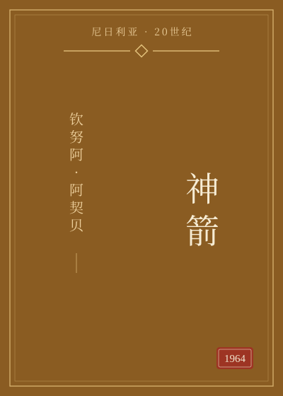
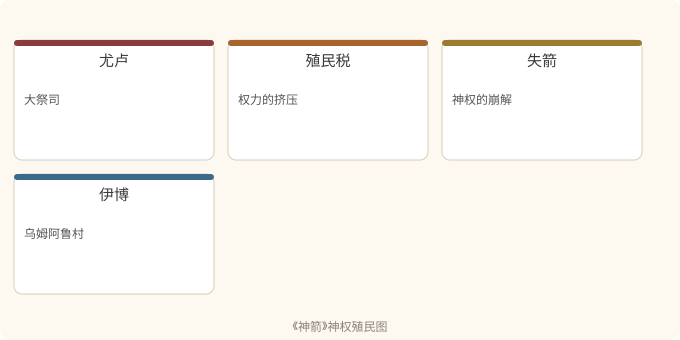

神箭
一、基本信息
| 作者 | 阿契贝 |
|---|---|
| 成书/出版 | 1964年（作者页 B106 口径：神箭（1964）） Chinua Achebe — Encyclopaedia Britannica（百科全书） |
| 国别/地区 | 尼日利亚 |
| 时代 | 现当代 · 20世纪 |
| 体裁 | 长篇小说 |
| 语言 | 英语 |

《神箭》神权殖民图（主题·结构图）
二、创作背景
作者页（B106）：阿契贝 major_works 载'神箭（1964）'（B106 作者页定位，详见 wajie 条核对）。
题材（通说待核）：伊博族大祭司尤卢与殖民行政——神权与殖民的双重挤压。
三、内容脉络
尤卢大祭司的失势：基督教与殖民税（通说待核）。
'神箭'的失射——神权的崩解（通说待核）。
四、主要人物表
| 人物 | 身份 | 说明 |
|---|---|---|
| 尤卢 | 大祭司 | （通说待核） |
| 温特博顿? | 区专员 | （通说待核） |
五、主题与艺术特点
- 殖民对信仰秩序的瓦解（通说）。
- '瓦解'的前史：伊博社会的内部（通说）。
- 悲剧的反讽结构（通说待核）。
六、影响与评论
- 作者页：阿契贝'尼日利亚三部曲'之二（B106 作者页口径——通说待核）。
Chinua Achebe — Encyclopaedia Britannica（百科全书） - 作者页：阿契贝为非洲文学之父级人物（B106 作者级定位）。
Chinua Achebe — Encyclopaedia Britannica（百科全书）
七、阅读建议
难点
- 伊博宗教与殖民史。
- 谚语的密度。
- 《神箭》（重庆出版社'非洲三部曲'，通说待核）。
- 英文原版（公有领域渐近）。
《瓦解》→《神箭》→《上帝之箭》三部曲。
八、待核实
- 1964年出版（Heinemann说）核对。
- 尤卢人名与情节核对。
- '尼日利亚三部曲'总名待核。
本页主要来源
阿契贝的其他收录作品：瓦解